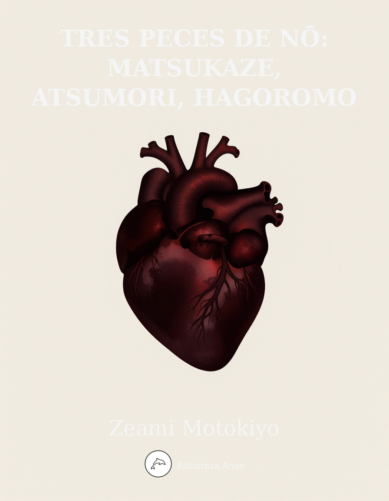

Tres peces de nō: Matsukaze, Atsumori, Hagoromo
能三番：松風・敦盛・羽衣
Tres peces mestres del teatre nō japonès: Matsukaze (松風), drama d'amor i memòria sobre dues germanes i el cortesà Ariwara no Yukihira; Atsumori (敦盛), peça de guerrer (shura-mono) sobre la reconciliació entre el monjo Renshō i l'esperit del jove noble Atsumori; i Hagoromo (羽衣), peça celestial sobre un pescador que troba el mantell de plomes d'una tennin a la platja de Miho.
Autor: 世阿弥元清 (Zeami Motokiyo, c. 1363–1443) Font: Textos clàssics del repertori de Nō (謡曲), domini públic Llengua: japonès clàssic (中世日本語)
一、松風 (Matsukaze)
ワキの登場
旅の僧にて候。われ諸国一見の僧にて候。われいまだ津の国須磨の浦を見ず候ほどに、このたび思ひ立ち須磨の浦を一見せばやと存じ候。
ワキの道行
月も隈なき須磨の浦、月も隈なき須磨の浦。関路の千鳥音さへて、波の音松の風、ただ独りゆく旅なれや。須磨の浦に着きて候。
ワキの詞
急ぎ候ほどに、これははや須磨の浦に着きて候。不思議やなこの汀に松の古木のあるに、色ある短冊を付けたるが見え候。立ち寄りて見候へば、「立ち別れいなばの山の峰に生ふる松としきけばいまかへりこむ」と書き付けて候。痛はしやこの松は行平の中納言の、松風・村雨とて愛せられし海人おとめの旧跡と聞き及びしが、まことにこれなるべし。いかさまこの所の人に尋ねばやと存じ候。
シテ・ツレの登場
汐汲みの、汐汲みの。わが衣手に月もやどるらむ。
シテの上歌
松風・村雨と聞くからに、昔をかけてしのばるる。行平の中納言に契りし事どものかずかず、今に絶えせぬ名のみして、跡は松風・村雨のみ、跡は松風・村雨のみ。
地謡
ああ、もとよりもわれは名も無き海人なれど、さすがに命は惜しきものを。須磨の海人のなれ衣、涙の玉の数を添へて、塩焼きそむる夕暮に、遠里小野のさとにのみ、煙は立てど人は来ず、煙は立てど人は来ず。
ツレの詞
これなる松は行平の中納言、松風・村雨二人のあまを寵愛ありし松と聞きしが、さてはこの松にてありけるよ。なつかしの松風の音や。
シテの詞
恥ずかしながら行平の中納言に契りし海女松風とは、われらが事にて候。はかなき身の上を恥ぢ忍びつるに、思ひもかけずただいま旅僧の尋ね給へば、かかるうきめを語り出だして、猶も思を増す涙、猶も思を増す涙。
地謡（クセ）
それ須磨は在原の行平の中納言、月の都をよそになす、流謫の境なれば、ただ須磨の浦に立つ波と、あしの丸屋に起き臥しの、友とてはただ松風の、音にぞ夜半を知りにける。
かくて行平のこの浦に、月の宴を催し給ひしに、たまたまこの浦に参りしを、松風、村雨と名をつけて、契り深くもなりにけり。契り深くもなりにけり。
さるほどに行平も都に帰り給ひ、われらは須磨にとどまりて、磯の蛤汐に住み、海人のしわざをかへりみず、松にかたみの冠・狩衣を残し置きて、「立ち別れいなばの山の峰に生ふる松としきけばいまかへりこむ」と、なぐさめ置きし言の葉の、松にも秋の風立ちて、便りの絶ゆる悲しさよ。
ものを思ふと過ぐすほどに、行平の都にて死に給ひぬる由を伝へ聞く。さればこそ命とても限りあれば、松風・村雨もろともに、塩焼く海人のはかなさに、露の命もきえにけり、露の命もきえにけり。
シテ（序の舞ののち）
松風に心もすみの江の、月の光を汲み持ちて、わが身に引く汐衣、つきぬ思ひの汐路かな。
かたみの冠・狩衣を身にまとひ、姿は行平に見えつれど、言葉をかはす甲斐もなく、ただ恋しとも恋しとも、いはまほしきに音をのみぞ泣く。
地謡（キリ）
松に吹く風も、松風と聞けば、なつかしき、なほわが名ぞと思へばなつかし。わが名ぞと思へばなつかし。
夜すがら松風に遊ぶうちに、夜も明け方になりぬれば、松風村雨の跡もなく、松風村雨の跡もなく、ただ松に吹く風ばかり、ただ松に吹く風ばかりなり。
二、敦盛 (Atsumori)
ワキの登場
これは武蔵の国住人、熊谷の次郎直実にて候。われ一の谷にて平家の公達敦盛を討ちまゐらせて候ひしが、いとど無常を感じ、出家してこの名を蓮生と改め、敦盛の御菩提を弔はんと、一の谷に下りて候。
ワキの道行
夢の世を夢と知りてぞ夢さむる。夢の世を夢と知りてぞ夢さむる。はかなき道の道すがら。人の行衛のいくさ場の、跡をとどめぬ草の原、一の谷にも着きにけり、一の谷にも着きにけり。
ワキの詞
急ぎ候ほどに、一の谷に着きて候。いかに誰かある。この辺りの人に尋ねたき事の候。
前シテの登場と草刈りの笛
須磨の海人のしわざとて、塩焼くけぶりの絶え間より、聞こゆるものは青葉の笛。かの敦盛の形見とて、名に残したる青葉の笛の音色かな。
シテの詞
さん候。かの敦盛は笛の上手にて候ひしなり。一の谷の軍に、この笛を陣中に持ち給ひしが、かかる武勇のいさみの中に、かくの如き風流の遊びを忘れ給はぬ事、ことに哀に候。
地謡
思へばこの世は常の住みかにあらず。草葉に置く白露、水に宿る月よりなほあやし。金谷に花を詠じ、栄花は先立って無常の風に誘はるる。南楼の月を弄ぶ輩も、月に先立って有為の雲に隠れり。人間五十年、下天の内をくらぶれば、夢幻のごとくなり。一たび生を享け、滅せぬもののあるべきか。
中入り
これにて暇を申し候。
後シテの登場
あら、恥づかしや。敵の前にてかかる姿を見え奉る恥づかしさよ。されどもまことの旅僧にておはせば、わが跡弔ひて賜はれ。
ワキの詞
不思議やなかかる野原に鎧武者の出で来るは何事にて候ぞ。
後シテの詞
恥づかしながらわれこそは、平家の公達敦盛が幽霊なり。さりとてはわれを討ちし敵の前に、かかる姿を見え奉る口惜しさよ。
地謡（クセ）
そもそも平家の一門は、花洛を離れて西海の浪に漂ふ身となりしよりこのかた、月に一夜の宿りだになき船の内の住まひとて、ことに哀なる有様なり。
一の谷を城郭に構へ、ひそかに都をうかがひ、春を迎ふる陣中に、管弦の遊びの折しもあれ、敵は寄せ来る。
波は押し寄する岸の際まで、駒を並べて攻め来る。ときの声に驚き、取る物も取りあへず、船に乗りおくれ、渚に馬を馳せ走らす。
修羅の舞ののち
熊谷が手にかかり、はかなくなりしかの敵も、いまは弔ひの友ぞかし。いまは弔ひの友ぞかし。弔ひてたべ、弔ひてたべ。
地謡（キリ）
さるにても敵なれば、かたきと思ふも報ひなり。いや、かたきにてはなかりけり。弔ひの声を聞くときは、仏も衆生もへだてなき。一つ蓮の身とならむ。同じ蓮の縁なれば、弔ひてたべ蓮生法師、弔ひてたべ蓮生法師。
三、羽衣 (Hagoromo)
ワキの登場
これは三保の松原の漁夫白龍にて候。毎日浦に出でて釣を垂れ候。
ワキの道行
三保の松原を眺めやれば、富士の高嶺に雪はふり、霞たなびく浦波の、松のひまより見え渡る、三保の松原に着きにけり。
ワキの詞
不思議やな松の枝に美しき衣のかかりたるが見え候。寄りて見候へば、色も香も世の常ならぬ衣なり。さてはこれを持ち帰り、家の宝と致さばやと存じ候。
シテの登場
もし、その衣は我がものにて候。取りて返し給はり候へ。
ワキの詞
これは天人の羽衣とこそ聞きつるに。さらば国の宝と致す間、返すまじきなり。
シテの詞
あら情なの仰候ひそや。その衣なくては天に帰る事ならず。なにとぞ返し給はり候へ。
地謡
天人のかろき姿は、花の袂も露けくて、天つ乙女のたまの緒の、長き愁ひの涙のみ。天つ乙女のたまの緒の、長き愁ひの涙のみ。
ワキの詞
まことに天人と見奉れば不憫に存じ候。さらば衣を返し申さうずるにて候。天人の舞を舞ひて見せ給へ。その上にて衣を返し申すべし。
シテの詞
うれしやさてはいとも優しき情の言葉かな。さらば衣を返し給はらば、舞を奏して見せ申し候べし。
ワキの詞
まづ舞を舞ひ給へ。そののちに衣を返し申さん。
シテの詞
いや、衣なくては舞を舞ふ事ならず。まづ衣を返し給はり候へ。
ワキの詞
さらば衣を渡さば、舞はで天に帰り給はんか。
シテの詞
いや、疑ひは人間にあり。天に偽りなきものを。
ワキの詞
あら恥づかしの言葉やな。さらば衣を返し申さん。
地謡
衣を返せば喜びの舞の袖、衣を返せば喜びの舞の袖、天の羽衣うち着つつ、舞の姿ぞありがたき。
シテの舞と詞
春は曙霞たなびきて、三保の松原打ち出でて、浮島が原を遥かに見渡せば、富士の高嶺に雪はふる。
東路の日も長閑にて、清見が関の波の音、三保の松原浦づたひ、松の緑の色添ひて。
天つ乙女の春の遊び、花のかざしに舞の袖、月の桂もかへるなり。
地謡（序の舞ののち）
天の羽衣花の香に、天の羽衣花の香に、霞にまがふ舞の袖。東遊びの駿河舞、いつまでかくは清見潟の、月澄みわたる三保の松原に、天つ乙女の舞の姿、残し置きける松風も、荻の葉草も音に聞こえし。
地謡（キリ）
初め一天にかがやきて、国土にも光を施す。日本の秋の田の面を照らす。天の羽衣浦風に、棚引きたなびき三保の松原、浮島が原、愛鷹山も薄雲の、富士の高嶺に吹き上げて、雲に入りつつ、雲にまぎれて、天つ御空の、霞のうちに、失せにけり、失せにけり。
Tres peces de nō: Matsukaze, Atsumori, Hagoromo
Zeami Motokiyo
Traduït del japonès clàssic per Biblioteca Arion
I. Matsukaze (松風)
Entrada del waki
Sóc un monjo viatger. Com a monjo pelegrí que he recorregut totes les terres, encara no he vist la platja de Suma, a la província de Tsu, i per això he decidit emprendre el camí per contemplar-la.
Viatge del waki
La lluna sense vel sobre la platja de Suma, la lluna sense vel sobre la platja de Suma. Al pas de la barrera, els corrents[1] emmudeixen, i amb el so de les ones i el vent entre els pins, faig sol aquest viatge. He arribat a la platja de Suma.
Paraules del waki
Tot fent camí, ja he arribat a la platja de Suma. Que estrany! A la vora de l’aigua hi ha un vell pi al qual han lligat una tira de paper de colors. M’hi acosto i llegeixo: «Quan me’n vagi, si sents parlar del pi que creix al cim del mont Inaba, torna-hi aviat».[2] Quina pena! Aquest pi deu ser la relíquia d’aquelles dues pescadores que el conseller mitjà Yukihira va estimar amb els noms de Matsukaze i Murasame. En efecte, ha de ser aquí. Voldria preguntar-ho a algú d’aquests paratges.
Entrada del shite i el tsure
Recollint sal, recollint sal. La lluna també deu reposar a les meves mànigues.
Cant del shite
En sentir els noms Matsukaze i Murasame,[3] el passat ens torna a la memòria. El conseller mitjà Yukihira va prometre’ns tantes coses, i d’elles només perdura el nom: només queda el vent entre els pins i la pluja de la muntanya, només queda el vent entre els pins i la pluja de la muntanya.
Cor
Ah, des del principi no som més que humils pescadores sense nom, però tot i així la vida ens és preuada. Com les vestidures gastades de les bussejadores de Suma, les llàgrimes s’hi acumulen com perles, i al capvespre en què comencem a cremar sal, del llogarret d’Onosato només s’alça el fum, però ningú no ve, el fum s’alça però ningú no ve.
Paraules del tsure
Aquest pi és el del conseller mitjà Yukihira, aquell a qui va estimar les dues pescadores Matsukaze i Murasame. Doncs deu ser aquest pi! Oh, com m’enyora el so del vent entre els pins!
Paraules del shite
Per vergonyós que sigui, nosaltres som les pescadores que vam prometre’ns al conseller mitjà Yukihira: jo sóc Matsukaze. Vivint en la humilitat, amagàvem la nostra condició, però ara, inesperadament, el monjo viatger ens ho ha preguntat, i en contar la nostra trista sort, les llàgrimes augmenten encara més, les llàgrimes augmenten encara més.
Cor (kuse)
Suma és el lloc on el conseller mitjà Ariwara no Yukihira, allunyat de la capital de la lluna,[4] va viure el seu desterrament. A la platja de Suma, entre les ones i la cabana de joncs, el seu únic company era el vent entre els pins, i pel so coneixia les hores de la nit.
I fou així que Yukihira, celebrant un banquet de lluna en aquesta platja, ens va trobar per atzar, i ens va donar els noms de Matsukaze i Murasame, i el nostre vincle es va fer pregon. El nostre vincle es va fer pregon.
Però al cap d’un temps, Yukihira va tornar a la capital, i nosaltres vam quedar a Suma. Com les cloïsses de l’escull, vivíem submergides en la marea, sense lamentar la nostra feina de pescadores. Ell va deixar al pi, com a record, la seva corona i la seva túnica de caça, i ens va consolar dient: «Quan me’n vagi, si sents parlar del pi que creix al cim del mont Inaba, torna-hi aviat». Però fins i tot sobre aquelles paraules posades al pi va bufar el vent de la tardor, i tota notícia va cessar. Quina tristesa!
I mentre el temps passava consumit de pena, ens va arribar la nova que Yukihira havia mort a la capital. I per això, ja que fins la vida té un límit, Matsukaze i Murasame, juntes, com el fum efímer de les bussejadores que cremen sal, ens vam extingir com la rosada, ens vam extingir com la rosada.
Shite (després de la dansa introductòria)
Amb el vent entre els pins,[5] el cor s’aclareix com les aigües de la badia, i porto la lluna recollida amb l’aigua, vestida amb la meva túnica de marea: un camí de pensaments que mai no s’acaba.
Vestida amb la corona i la túnica de caça que ens va deixar com a record, la meva forma sembla la d’Yukihira, però no hi ha manera d’intercanviar paraules. Només puc dir que l’estimo, que l’estimo, i entre sanglots la veu se’m trenca.
Cor (kiri)
El vent que bufa entre els pins — si el vent entre els pins és el meu nom, Matsukaze, com n’és de nostàlgic! Si penso que és el meu nom, com n’és de nostàlgic!
Tota la nit jugant amb el vent entre els pins, quan el dia ja despunta, ni rastre de Matsukaze ni de Murasame, ni rastre de Matsukaze ni de Murasame: només queda el vent que bufa entre els pins, només queda el vent que bufa entre els pins.
II. Atsumori (敦盛)
Entrada del waki
Sóc Kumagai no Jirō Naozane, natural de la província de Musashi. A la batalla d’Ichi-no-Tani vaig abatir el jove noble Atsumori, del clan Taira, i des d’aleshores, commòs per la impermanència de totes les coses, m’he fet monjo sota el nom de Renshō[6] i he baixat fins a Ichi-no-Tani per pregar pel repòs de la seva ànima.
Viatge del waki
El món és un somni, i saber-lo somni és despertar. El món és un somni, i saber-lo somni és despertar.[7] Pel camí efímer, seguint la petja dels homes cap al camp de batalla, on ni els rastres no perduren entre l’herba, he arribat a Ichi-no-Tani, he arribat a Ichi-no-Tani.
Paraules del waki
Tot fent camí, ja he arribat a Ichi-no-Tani. Eh, hi ha algú? Voldria preguntar alguna cosa a la gent d’aquí.
Entrada del shite i la flauta dels segadors
Com és propi de les bussejadores de Suma, a través del fum de la sal, se sent una flauta de fulles verdes.[8] Deu ser la flauta que Atsumori va deixar com a record: quin so, el de la flauta de fulles verdes!
Paraules del shite
En efecte, Atsumori era un mestre de la flauta. A la batalla d’Ichi-no-Tani, va portar aquesta flauta al campament, i que enmig de la fúria del combat no oblidés una distracció tan refinada, és especialment commovedor.
Cor
Penseu-hi: aquest món no és estatge definitiu. Com la rosada sobre la fulla d’herba, com la lluna reflectida a l’aigua, encara més fugaç.[9] A Kinkoku es cantaven les flors, però la glòria es precipita davant el vent de la impermanència. Els qui gaudien de la lluna al Pavelló del Sud també s’amaguen, abans que la lluna, rere els núvols de la caducitat. Cinquanta anys de vida humana, comparats amb el regne celestial, són com un somni, com una il·lusió. Qui, havent rebut la vida, no haurà de perir?
Intermedi
Amb això, em comiat.
Entrada del shite posterior
Ah, quina vergonya! Mostrar aquesta forma davant l’enemic: quina vergonya! Però si sou un autèntic monjo viatger, us prego, pregueu pel meu repòs.
Paraules del waki
Que estrany! Un guerrer amb armadura que apareix en aquest erm: què significa?
Paraules del shite posterior
Per vergonyós que sigui, sóc l’esperit d’Atsumori, jove noble del clan Taira. Que hagi de mostrar-me amb aquesta aparença davant l’enemic que em va abatir: quina amargor!
Cor (kuse)
Doncs bé, els membres del clan Taira, des que van abandonar la capital florida i van quedar a mercè de les ones del mar occidental, no tenien ni una nit d’estatge segur dins les naus: quina sort tan lamentable!
Van establir la fortalesa a Ichi-no-Tani, i en secret vigilaven la capital. A la primavera, enmig del campament, mentre es delien amb la música, l’enemic ataca.
Les ones s’aboquen sobre el litoral, i cavall rere cavall, es llancen a l’assalt. Sorpresos pel crit de guerra, sense temps de prendre res, els qui no van poder embarcar llancen els cavalls per la platja.
Després de la dansa dels asura
Caigut per la mà de Kumagai, aquell enemic d’antany és ara, tanmateix, company d’oracions. Company d’oracions! Pregueu per mi, pregueu per mi!
Cor (kiri)
I amb tot, era l’enemic, i veure’l com a enemic és karma. No, al capdavall no era cap enemic.[10] Quan se senten les pregàries, ni Buda ni els éssers no es distingeixen: puguem renéixer en un mateix lotus. Pel vincle d’un mateix lotus, pregueu per mi, Renshō, pregueu per mi, Renshō.
III. Hagoromo (羽衣)
Entrada del waki
Sóc Hakuryō, pescador de la platja de Miho. Cada dia surto a la costa a llançar l’ham.
Viatge del waki
Mirant la platja de Miho, la neu cau sobre el cim del Fuji, la boira s’estén sobre les ones de la costa, i entre els pins s’albira el paisatge: he arribat a la platja de Miho.
Paraules del waki
Que estrany! Sobre una branca de pi penja un vestit bellíssim. M’hi acosto i veig que el color i la fragància no són d’aquest món. Doncs me l’emportaré a casa com a tresor.
Entrada del shite
Ei! Aquell vestit és meu. Torneu-me’l, si us plau.
Paraules del waki
M’han dit que és el mantell de plomes d’un ésser celestial. En tal cas, el guardaré com a tresor del país i no el tornaré pas.
Paraules del shite
Oh, que despietat sou! Sense aquell mantell no puc tornar al cel. Us ho prego, torneu-me’l.
Cor
L’ésser celestial, amb la seva forma etèria, les mànigues florals humides de rosada, el fil de la vida de la donzella celestial no és sinó un llarg plany de llàgrimes. El fil de la vida de la donzella celestial no és sinó un llarg plany de llàgrimes.
Paraules del waki
En efecte, veig que sou un ésser celestial i em feu compassió. Us tornaré el vestit, però danseu per a mi. Us el tornaré després de la dansa.
Paraules del shite
Oh, quina alegria! Paraules plenes de gentilesa! Doncs bé, si em torneu el vestit, dansaré per a vós.
Paraules del waki
Primer danseu. Després us tornaré el mantell.
Paraules del shite
No, sense el mantell no puc dansar. Primer torneu-me’l, si us plau.
Paraules del waki
Si us el torno, no fugireu al cel sense dansar?
Paraules del shite
No. El dubte és cosa dels humans. Al cel no hi ha engany.[11]
Paraules del waki
Oh, quina vergonya em fan les vostres paraules! Doncs us torno el mantell.
Cor
En rebre el mantell, amb joia dansa, en rebre el mantell, amb joia dansa: vestida amb el mantell celestial, l’espectacle de la dansa és un prodigi.
Dansa i paraules del shite
A la primavera, l’alba amb la boira s’estén, i des de la platja de Miho, mirant cap a l’horitzó, a la llunyania, el cim del Fuji cobert de neu.
Pel camí oriental,[12] els dies llargs i plaents, el so de les ones al pas de Kiyomi, la platja de Miho seguint la costa, el verd dels pins que s’intensifica.
La donzella celestial jugant amb la primavera, dansant amb les mànigues florals, fins la lluna del llorer torna al cel.
Cor (després de la dansa introductòria)
El mantell celestial perfumat de flors, el mantell celestial perfumat de flors, les mànigues de la dansa es confonen amb la boira. La dansa de Suruga dels jocs orientals,[13] fins quan durarà a la platja de Kiyomi? La lluna s’aclareix sobre la platja de Miho, i la donzella celestial dansa i en deixa la imatge; fins el vent entre els pins i les fulles de jonc se’n senten l’eco.
Cor (kiri)
Primer resplendeix per tot el cel i escampa la seva llum sobre el país. Sobre els arrossars del Japó a la tardor, il·luminant-los. El mantell celestial, amb la brisa de la costa, flota i s’allarga sobre la platja de Miho, sobre Ukishimagahara, i per sobre el mont Ashitaka, enfilant-se entre els núvols prims, fins al cim del Fuji s’eleva i, entrant als núvols, es confon amb els núvols, es perd en la boira del cel, es perd en la boira del cel.
Traducció de domini públic — CC BY-SA 4.0
Notes
Corrents (千鳥, chidori)
El terme chidori designa els corrents (literalment «mil ocells»), però en el context poètic de Suma evoca també els cridaires que corren per la platja. La imatge auditiva —el silenci dels corrents contraposat al so de les ones i el vent— estableix el to solitari i melancòlic de la peça.
↩ Tornar al textPoema d'Yukihira
Es tracta del cèlebre poema d’Ariwara no Yukihira (在原行平, 818–893), recollit al Kokin Wakashū (古今和歌集, núm. 365): «立ち別れいなばの山の峰に生ふる松としきけばいまかへりこむ» — «Quan me’n vagi cap a Inaba, si sents parlar del pi que hi creix al cim, pensa que tornaré aviat». El poema juga amb l’homofonia entre inaba (si me’n vaig) i Inaba (topònim), i entre matsu (pi) i matsu (esperar).
↩ Tornar al textMatsukaze i Murasame
Els noms «Matsukaze» (松風, «vent entre els pins») i «Murasame» (村雨, «pluja de la muntanya» o «ruixat») són noms poètics que Yukihira va donar a les dues germanes pescadores durant el seu exili a Suma. Ambdós noms evoquen fenòmens naturals efímers, en consonància amb el tema budista de la impermanència.
↩ Tornar al textCapital de la lluna (月の都)
Expressió poètica per referir-se a la capital imperial, Kyoto (平安京). La lluna és símbol de la civilització cortesana i la cultura refinada, en contrast amb la rusticitat de l’exili a Suma.
↩ Tornar al textJoc de paraules amb «vent entre els pins»
En tot el clímax de Matsukaze, el text juga constantment amb la polisèmia de 松風 (matsukaze): és alhora el nom de la protagonista, el fenomen natural (el vent que bufa entre els pins) i una metàfora de la presència persistent de l’amor perdut. Aquesta superposició de significats és essencial a l’estètica del nō i resulta irreproduïble en traducció.
↩ Tornar al textRenshō (蓮生)
Nom monàstic de Kumagai no Jirō Naozane (熊谷次郎直実, 1141–1208), guerrer del clan Minamoto que, segons el Heike Monogatari, va matar el jove Atsumori (de setze anys) a la batalla d’Ichi-no-Tani (1184) i, aclaparat pel remordiment, es va fer monjo. El nom Renshō significa «nascut del lotus», al·lusió a la promesa de renaixement en la Terra Pura budista.
↩ Tornar al textEl món és un somni
Ressò del famós passatge del Sutra del Diamant (金剛般若波羅蜜経): «Tot el que és condicionat és com un somni, una il·lusió, una bombolla, una ombra». La repetició és un recurs característic del nō per subratllar l’estat meditatiu del personatge.
↩ Tornar al textFlauta de fulles verdes (青葉の笛)
Segons la tradició, Atsumori portava una flauta anomenada Aoba no Fue (青葉の笛, «flauta de fulles verdes» o «flauta del fullam verd»), heretada del seu avi Tadamori. Que un guerrer portés un instrument musical al camp de batalla simbolitza la cultura refinada del clan Taira, en contrast amb la brutalitat de la guerra.
↩ Tornar al textPassatge sobre la impermanència
Aquest passatge del cor és un dels més cèlebres del teatre nō, i recull temes del Heike Monogatari. La referència a Kinkoku (金谷) al·ludeix al jardí de Shi Chong (石崇), poeta xinès de la dinastia Jin occidental, famós per la seva opulència efímera. El Pavelló del Sud (南楼) evoca Yu Liang (庾亮), governador de la Xina del sud que contemplava la lluna des del seu pavelló. «Cinquanta anys de vida humana» prové del Atsumori del Kōwakamai (幸若舞) i va ser citat famosament per Oda Nobunaga.
↩ Tornar al textNo era cap enemic
El moment culminant de la reconciliació: l’esperit d’Atsumori renuncia a la venjança i reconeix que, des de la perspectiva budista, la distinció entre amic i enemic és il·lusòria. El lotus compartit (一つ蓮, hitotsu hachisu) simbolitza el renaixement conjunt a la Terra Pura d’Amida.
↩ Tornar al textAl cel no hi ha engany
Una de les rèpliques més famoses del repertori de nō: «疑ひは人間にあり。天に偽りなきものを» (Utagahi wa ningen ni ari. Ten ni itsuwari naki mono wo). La tennin apel·la a la puresa celestial per contrastar-la amb la desconfiança humana, i el pescador, avergonyit, cedeix. Aquesta frase encapsula l’ideal del makoto (誠, sinceritat) que impregna l’estètica de Zeami.
↩ Tornar al textCamí oriental (東路)
El Tōkaidō (東海道), la ruta costera que unia Kyoto amb les províncies orientals, passant per Suruga (actual prefectura de Shizuoka), on se situa la platja de Miho amb la seva vista icònica del mont Fuji.
↩ Tornar al textDansa de Suruga (駿河舞)
La Suruga-mai és una forma de dansa sagrada (神楽, kagura) associada a la regió de Suruga. El terme «jocs orientals» (東遊び, azuma-asobi) designa les danses i músiques rituals de les províncies de l’est del Japó, incorporades a les cerimònies de la cort imperial.
↩ Tornar al textGlossari
- (nō)
-
Traducció: teatre nō
↩ Tornar al text - (shite)
-
Traducció: protagonista
↩ Tornar al text - (waki)
-
Traducció: deuteragonista
↩ Tornar al text - (tsure)
-
Traducció: acompanyant
↩ Tornar al text - (jiutai)
-
Traducció: cor
↩ Tornar al text - (jo no mai)
-
Traducció: dansa introductòria
↩ Tornar al text - (shura)
-
Traducció: asura / infern dels guerrers
↩ Tornar al text - (hagoromo)
-
Traducció: mantell de plomes
↩ Tornar al text - (tennin)
-
Traducció: ésser celestial
↩ Tornar al text - (ama)
-
Traducció: bussejadora / pescadora
↩ Tornar al text - (chūnagon)
-
Traducció: conseller mitjà
↩ Tornar al text - (mujō)
-
Traducció: impermanència
↩ Tornar al text - (yūrei)
-
Traducció: esperit / fantasma
↩ Tornar al text - (matsubara)
-
Traducció: pinar
↩ Tornar al text - (Suma)
-
Traducció: Suma
↩ Tornar al text - (Miho no Matsubara)
-
Traducció: Pinar de Miho
↩ Tornar al text - (kuse)
-
Traducció: clímax narratiu
↩ Tornar al text - (kiri)
-
Traducció: final
↩ Tornar al text